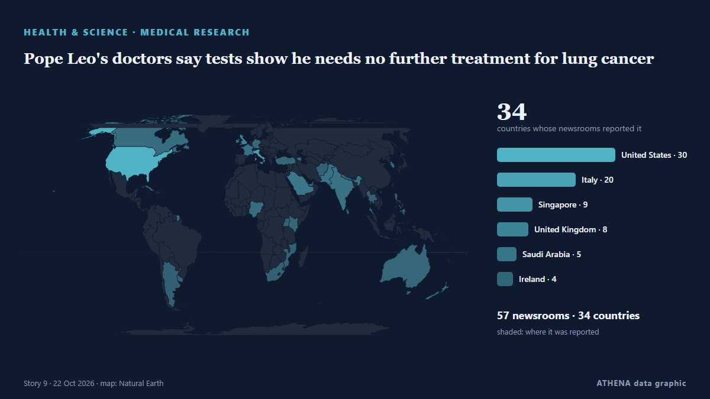

Pope Leo's doctors say tests show he needs no further treatment for lung cancer

The American pope, 71, said Sunday recent medical checks led to the detection of the early-stage nodule. из NBC News (World)
Независимые источники: 57 изданий в 34 странах, с 11 окт.; первым сообщил NBC News (World); освещение идёт на спад. ATHENA оценивает риск как низкий (1.9/10), прежде всего из-за тяжести описываемого ущерба и географического и отраслевого охвата. Уверенность — 92 % (высокая); подтверждают независимые источники: 57 изданий, средняя надёжность источников — 76 %. СМИ по странам: Соединенные Штаты (13), Италия (11), Саудовская Аравия (2). Освещение: с 11 окт. по 15 окт., 98 ч.
Почему это важно: События в здравоохранении и науке могут менять риски для общественного здоровья, приоритеты исследований и регулирование.
Что изменилось: 8 новых сообщений от 8 редакций за 24 часа до 22 окт..
Заголовки приводятся на английском языке, как они были опубликованы.
Коротко в цифрах
Отобрано, оценено и написано по опубликованной методологии ATHENA. Ни один редактор не вмешивается в отдельные события. Как это создаётся ›
| 11 Oct 10:34 UTC | 4 |
|---|---|
| 11 Oct 22:34 UTC | 2 |
| 12 Oct 10:34 UTC | 1 |
| 12 Oct 22:34 UTC | 1 |
| 13 Oct 10:34 UTC | 8 |
| 13 Oct 22:34 UTC | 9 |
| 14 Oct 10:34 UTC | 8 |
| 14 Oct 22:34 UTC | 6 |
| 15 Oct 10:34 UTC | 19 |
| 15 Oct 22:34 UTC | 0 |
| 16 Oct 10:34 UTC | 13 |
| 16 Oct 22:34 UTC | 16 |
| 17 Oct 10:34 UTC | 29 |
| 17 Oct 22:34 UTC | 2 |
| 18 Oct 10:34 UTC | 3 |
| 18 Oct 22:34 UTC | 2 |
| 19 Oct 10:34 UTC | 3 |
| 19 Oct 22:34 UTC | 0 |
| 20 Oct 10:34 UTC | 0 |
| 20 Oct 22:34 UTC | 1 |
| 21 Oct 10:34 UTC | 5 |
| 21 Oct 22:34 UTC | 2 |
| 17 Oct 11:29 UTC | 3.8 |
|---|---|
| 17 Oct 13:56 UTC | 1.9 |
| 22 Oct 07:02 UTC | 1.9 |
Откуда эти цифры
Значимость
Риск
Уверенность
Освещение — кто сообщил и когда
заголовок в оригинале · открывает источник- NBC News (World) · Соединенные ШтатыPope Leo says he will undergo surgery to remove a nodule on his lung
- Fox News (World) · Соединенные ШтатыPope Leo announces tumor on lung, surgery planned in 'next few days'
- NBC News (World) · Соединенные ШтатыWhat to know about Pope Leo’s lung surgery
- Asharq Al-Awsat (English) · Саудовская АравияPope to Be Operated on for Lump on Lung
- CBS News (World) · Соединенные ШтатыPope Leo to undergo surgery after nodular lesion found in lung, Vatican says
- NBC News (World) · Соединенные ШтатыPope Leo to be hospitalized Tuesday for surgery to remove a lung nodule
- Granma International (EN) · КубаDíaz-Canel expresses solidarity with Pope Leo XIV following announcement of surgery
- LinkLab archive (imported) ·Pope diagnosed with lung cancer but had successful surgery, Vatican says
- Fox News (World) · Соединенные ШтатыPope Leo diagnosed with lung cancer after surgeons remove part of right lung, Vatican says
- ANSA English · ИталияThe pope's surgery concluded successfully
- ANSA English · ИталияThe pope's surgery concluded successfully
- Global News (World) · КанадаPope Leo diagnosed with lung cancer after nodule removal, Vatican says
- CBS News (World) · Соединенные ШтатыPope Leo's lung nodule surgery completed successfully, Vatican says
- SBS News · Австралия'Voice for peace': Albanese sends Pope Leo well wishes after cancer diagnosis
- Asharq Al-Awsat (English) · Саудовская АравияPope Leo Has Cancerous Growth Removed in Lung Operation
- Buenos Aires Times · АргентинаPope Leo has cancerous growth removed in lung operation
- MercoPress · УругвайPope Leo XIV has lung cancer and underwent successful surgery, Vatican says
- Khaama Press · АфганистанVatican Confirms Pope Leo XIV Has Lung Cancer After Surgery
- Nile Post · УгандаPope diagnosed with lung cancer but had successful surgery, Vatican says
- RTÉ News · ИрландияPope out of bed, progress 'normal' after cancer operation
- The New Arab · INTPope Leo spent 'a tranquil night' after cancer surgery: Vatican
- The New York Times (World) · Соединенные ШтатыPope Leo Has Lung Cancer, Vatican Says
- ANSA English · ИталияPope has peaceful night after lung cancer surgery
- ANSA English · ИталияPope has peaceful night after lung cancer surgery
- ANSA English · ИталияPope has peaceful night after lung cancer surgery
- CBS News (World) · Соединенные ШтатыPortion of Pope Leo's lung removed after doctors found cancer, Vatican says
- ANSA English · ИталияPope has peaceful night after lung cancer surgery
- ANSA English · ИталияPope's post-op recovery proceeding normally
- ANSA English · ИталияPope's post-op recovery proceeding normally
- The New York Times (World) · Соединенные ШтатыAs Pope Leo Recovers From Surgery, Messages of Support Abound at Rome Hospital
- Fox News (World) · Соединенные ШтатыPope Leo undergoes blood tests, X-ray following cancer surgery, Vatican says
- Africanews (English) · AFRWell-wishers rally behind Pope Leo XIV as he recovers from cancer surgery
- CBS News (World) · Соединенные Штаты10/14: CBS Evening News
- CBS News (World) · Соединенные ШтатыPope's cancer prognosis may depend on these factors, doctors say
- Stuff · Новая ЗеландияYou don’t have to smoke to get lung cancer. Pope Leo is proof
- The Straits Times · СингапурPope Leo had a good night in hospital as he recovers from lung cancer surgery
- ANSA English · ИталияPope had a good night in hospital says Vatican
- ANSA English · ИталияPope had a good night in hospital says Vatican
- Indian Express · ИндияPope Leo XIV’s lung cancer: Oncologist explains why non-smokers develop it
- ANSA English · ИталияPope doing physical therapy, good recovery of the operated lung